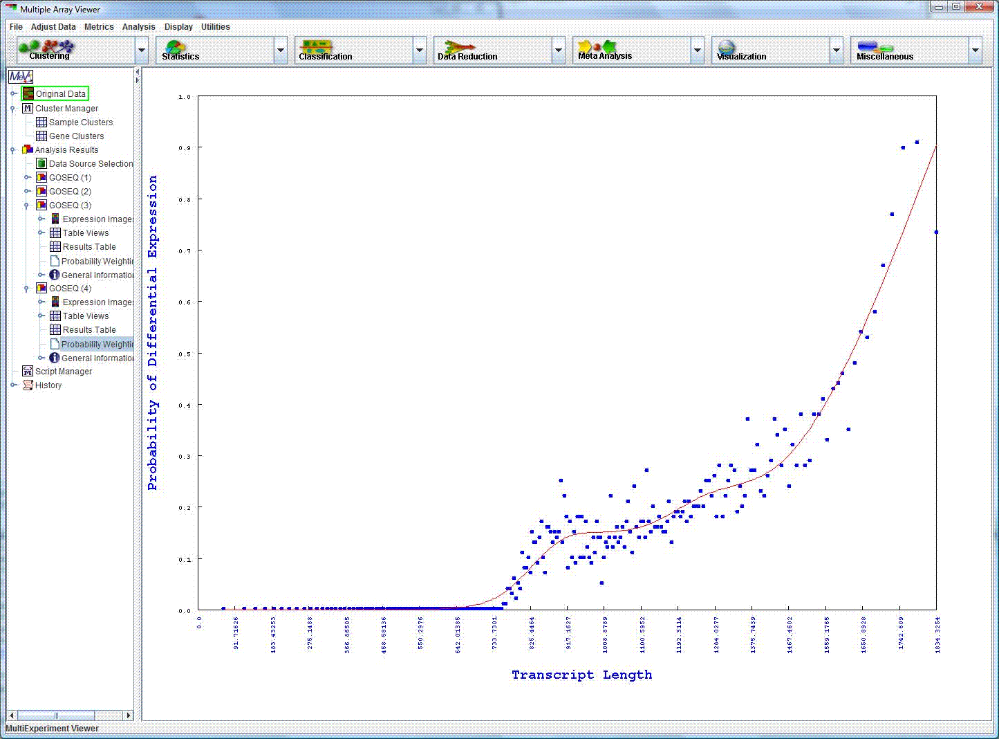

GOSEQ: Gene ontology analysis for RNA-seq
Parameter Information
Young et al., Gene ontology analysis for RNA-seq: accounting for selection bias Genome Biology 2010, 11:R14
GOSEQ, a new module to MeV 4.7, is a technique for identifying differentially expressed sets of genes, such as GO terms while accounting for the
biases inherent to sequencing data.
Running GOSEQ:
After opening the GOSEQ initialization dialog, select the tab indicating the type of analysis you intend to run on your data. Your options are:
1.) GO Analysis: MeV will use GO term annotation to perform a GO analysis.
2.) Cluster Analysis: MeV will run GOSEQ on a cluster of differentially expressed genes. Create a cluster of genes and use the Cluster Browser to select the set.
3.) Differential Expression Analysis: Use one of MeV's RNA-seq specific modules to find a set of differentially expressed genes on which to run GOSEQ.
Parameters:

Probability of differential expression graph
Assign a significance level. Gene sets with a p-value less than alpha will be deemed significant.
Number of permutations: Choose the number of iterations used in significance evaluation. Default is 1000.
Number of genes per transcript length bin: Adjust the size of the bin appropriate for your dataset.
Account for differential expression bias in: Use the drop-down menu to select the type of bias to account for. By default, RNA-seq transcript length is used as the bias.
{kind=link}
{kind=link}